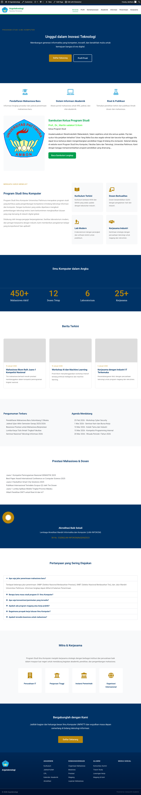
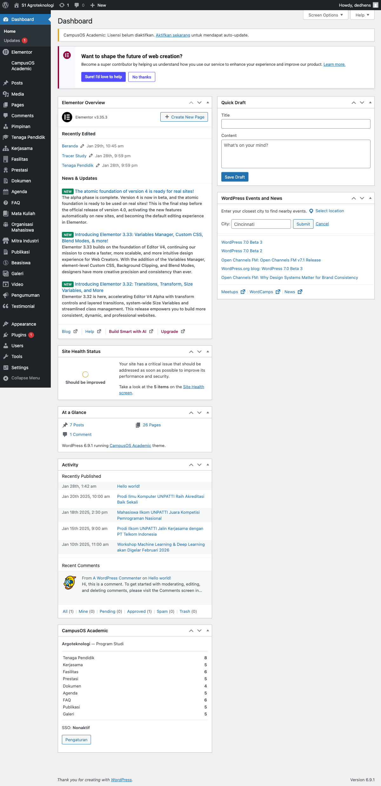
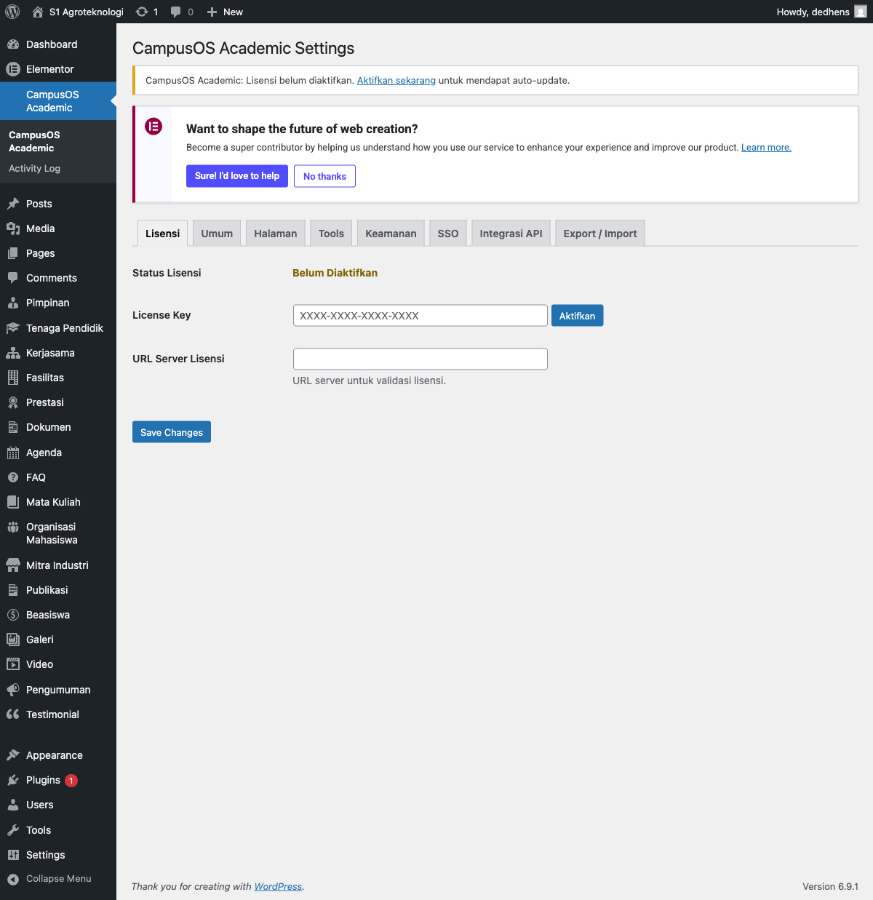
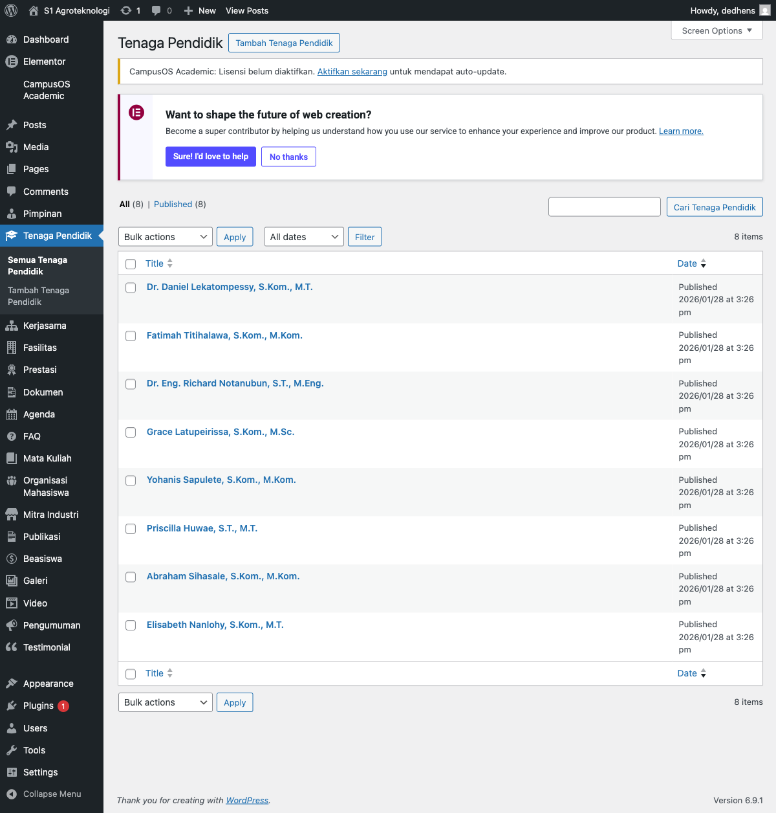
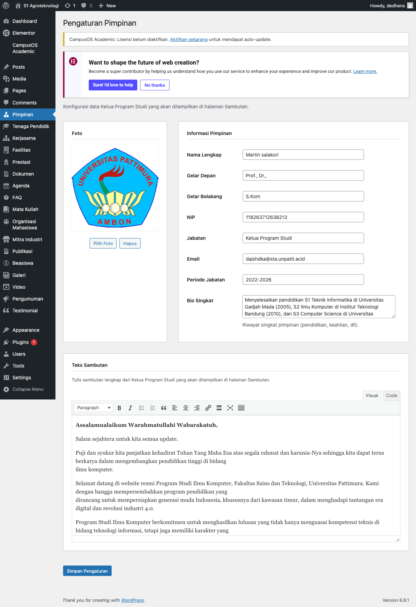
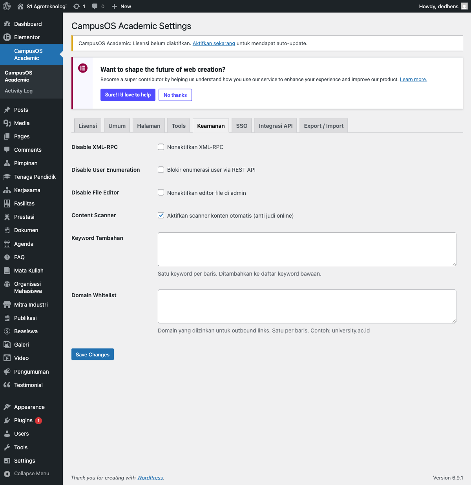
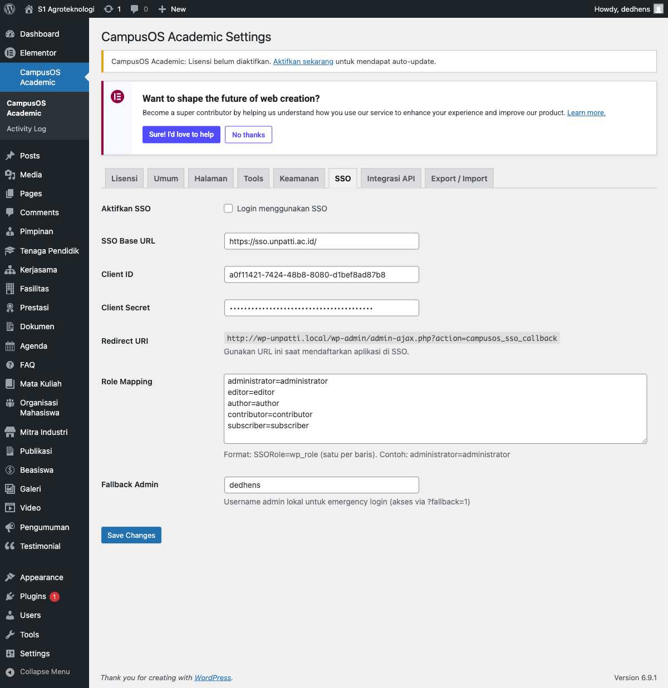
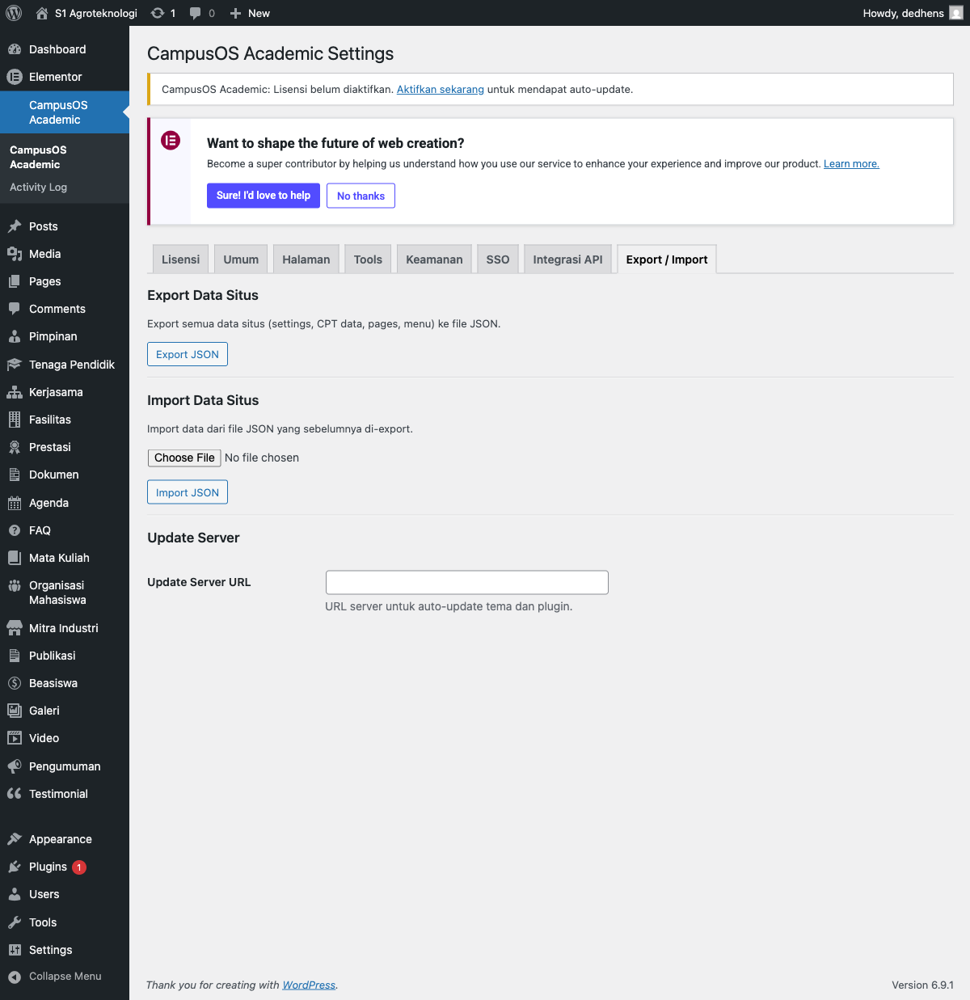

Panduan Penggunaan CampusOS Academic
Dokumentasi lengkap untuk membangun website Fakultas dan Program Studi berbasis WordPress.
1. Pendahuluan
CampusOS Academic v1.2.2 adalah sistem tema dan plugin WordPress yang dirancang khusus untuk membangun website Fakultas dan Program Studi di perguruan tinggi Indonesia. Sistem ini menyediakan semua fitur yang dibutuhkan untuk mengelola informasi akademik, data dosen, pengumuman, agenda, dan berbagai konten lainnya secara profesional.

Arsitektur Sistem
CampusOS Academic terdiri dari dua komponen utama:
- Tema (campusos-academic) — Mengatur tampilan visual: layout, warna, tipografi, template halaman, dan elemen desain. Bertanggung jawab untuk presentasi.
- Plugin (campusos-academic-core) — Mengatur logika bisnis: Custom Post Types, meta box, shortcodes, keamanan, SSO, integrasi API, dan fitur fungsional lainnya.
Fitur Utama
- 17 Custom Post Type untuk berbagai jenis konten akademik
- 19 shortcode siap pakai
- 11 widget Elementor kustom
- Setup Wizard untuk konfigurasi awal yang mudah
- Integrasi SSO via OAuth2 (Laravel Passport)
- Integrasi API SIAKAD dan SIGAP
- Sistem keamanan bawaan (anti brute force, content scanner)
- Auto-update untuk tema dan plugin
- Export/Import data antar instalasi
- Desain responsif dan ramah perangkat mobile
2. Persyaratan Sistem
Pastikan server Anda memenuhi persyaratan minimum berikut sebelum melakukan instalasi:
| Komponen | Minimum | Direkomendasikan |
|---|---|---|
| WordPress | 6.0+ | 6.9+ |
| PHP | 8.0+ | 8.2+ |
| MySQL | 5.7+ | 8.0+ |
| MariaDB (alternatif) | 10.3+ | 10.6+ |
| PHP Memory Limit | 256 MB | 512 MB |
| Max Upload Size | 32 MB | 64 MB |
Plugin Tambahan (Opsional)
- Elementor — Diperlukan jika Anda ingin menggunakan 11 widget kustom CampusOS Academic. Tanpa Elementor, Anda tetap bisa menggunakan shortcode dan template bawaan.
3. Instalasi
Instalasi Tema
- Login ke dashboard WordPress Anda (
https://domain-anda.ac.id/wp-admin). - Buka menu Appearance → Themes.
- Klik Add New, lalu klik Upload Theme.
- Pilih file
campusos-academic-theme-v1.2.2.zip, klik Install Now. - Klik Activate untuk mengaktifkan tema.
Instalasi Plugin
- Buka menu Plugins → Add New → Upload Plugin.
- Pilih file
campusos-academic-core-v1.2.2.zip. - Klik Install Now, lalu Activate Plugin.

4. Aktivasi Lisensi
Aktivasi lisensi diperlukan untuk mendapatkan akses ke fitur auto-update.
- Buka menu CampusOS Academic di sidebar admin WordPress.
- Klik tab Lisensi.
- Masukkan License Key yang Anda dapatkan saat pembelian.
- Klik tombol Aktifkan Lisensi.
- Status lisensi akan berubah menjadi "Aktif" dengan informasi tanggal kadaluarsa.

Informasi Penting tentang Lisensi
- Lisensi berlaku selama 1 tahun sejak tanggal aktivasi.
- Selama aktif, Anda akan menerima pembaruan otomatis (auto-update) untuk tema dan plugin.
- Setelah expired, tema dan plugin tetap berjalan normal, tetapi auto-update berhenti.
- Anda dapat memperpanjang lisensi kapan saja melalui dashboard akun Anda.
5. Konfigurasi Awal
Setup Wizard
Setelah instalasi, Setup Wizard akan muncul otomatis dan membantu mengkonfigurasi:
- Nama Fakultas/Program Studi
- Warna utama dan sekunder website
- Pembuatan halaman-halaman default (Beranda, Profil, Sambutan, dll.)
- Pengaturan menu navigasi
Customizer (Kustomisasi Tampilan)
Buka menu Appearance → Customize untuk mengatur tampilan secara detail:
- Warna Primer dan Sekunder — Atur warna utama yang digunakan di seluruh website.
- Font Family — Pilih jenis font yang sesuai dengan identitas kampus.
- Logo dan Favicon — Upload logo universitas/prodi dan ikon favicon.
- Hero Section — Atur gambar latar, judul, dan deskripsi di bagian hero homepage.
- Statistik — Atur angka-angka statistik yang ditampilkan di homepage.
Pengaturan Umum
Buka menu CampusOS Academic → tab Umum untuk mengatur preferensi umum plugin.
6. Manajemen Konten
CampusOS Academic menyediakan 17 Custom Post Type (CPT) yang dirancang khusus untuk kebutuhan website perguruan tinggi.
| Custom Post Type | Fungsi | Field Khusus |
|---|---|---|
| Tenaga Pendidik | Data dosen dan staf pengajar | Nama, NIDN, jabatan, bidang keahlian, riwayat pendidikan |
| Agenda | Kegiatan dan event | Tanggal, lokasi, waktu mulai/selesai |
| Pengumuman | Pengumuman resmi | Tanggal berlaku, prioritas |
| FAQ | Pertanyaan yang sering ditanyakan | Pertanyaan, jawaban |
| Galeri | Album foto kegiatan | Galeri gambar, keterangan |
| Dokumen | File dokumen (SK, pedoman, formulir) | File attachment, kategori dokumen |
| Prestasi | Prestasi mahasiswa dan dosen | Peraih, tingkat kompetisi, tahun |
| Kerjasama | MoU/kerjasama dengan institusi lain | Mitra, jenis kerjasama, periode |
| Fasilitas | Fasilitas laboratorium dan ruangan | Lokasi, kapasitas, deskripsi |
| Mitra Industri | Partner dan mitra industri | Nama perusahaan, logo, deskripsi |
| Mata Kuliah | Daftar mata kuliah | SKS, semester, deskripsi, prasyarat |
| Publikasi | Jurnal, paper, dan karya ilmiah | Penulis, jurnal, tahun, DOI |
| Beasiswa | Informasi beasiswa | Penyelenggara, deadline, persyaratan |
| Testimonial | Testimoni alumni dan mahasiswa | Nama, angkatan, foto, kutipan |
| Video | Video YouTube/embed | URL video, thumbnail |
| Organisasi Mahasiswa | Organisasi dan UKM mahasiswa | Ketua, deskripsi, kontak |
| Pimpinan | Data pimpinan prodi/fakultas | Dikelola via halaman khusus (lihat Bagian 8) |

Cara Menambahkan Konten Baru
- Buka menu CPT yang diinginkan di sidebar admin (misalnya Tenaga Pendidik).
- Klik Add New (Tambah Baru).
- Isi semua field yang tersedia sesuai kebutuhan.
- Upload gambar/foto melalui Featured Image jika diperlukan.
- Klik Publish untuk mempublikasikan konten.
7. Halaman Statis
CampusOS Academic menyediakan beberapa halaman statis dengan meta box khusus untuk informasi terstruktur:
- Sambutan — Halaman sambutan pimpinan Fakultas/Program Studi. Terhubung langsung dengan data Pimpinan (lihat Bagian 8).
- Profil — Visi, misi, tujuan, dan sasaran program studi dengan meta box khusus untuk setiap komponen.
- Penerimaan — Informasi PMB termasuk jalur masuk, persyaratan, dan jadwal pendaftaran.
- Kurikulum — Struktur kurikulum, Capaian Pembelajaran Lulusan (CPL), dan distribusi mata kuliah per semester.
8. Pengaturan Pimpinan
Data pimpinan Fakultas/Program Studi dikelola melalui menu khusus di sidebar admin.
- Buka menu Pimpinan di sidebar admin WordPress.
- Isi data: foto, nama lengkap beserta gelar, NIP, jabatan, email, dan periode jabatan.
- Tulis bio singkat tentang pimpinan.
- Tulis teks sambutan lengkap menggunakan editor visual.
- Klik Simpan untuk menyimpan data.

[campusos_pimpinan] serta [campusos_sambutan_kaprodi].
9. Shortcodes
CampusOS Academic menyediakan 19 shortcode yang dapat digunakan di halaman, post, atau widget teks mana pun. Semua shortcode menggunakan format [campusos_nama].
| Shortcode | Fungsi | Atribut |
|---|---|---|
[campusos_tenaga_pendidik] | Menampilkan daftar dosen | limit, layout |
[campusos_pimpinan] | Data pimpinan | — |
[campusos_sambutan_kaprodi] | Sambutan ketua prodi | — |
[campusos_agenda] | Daftar agenda | limit |
[campusos_pengumuman] | Daftar pengumuman | limit |
[campusos_faq] | Daftar FAQ | limit |
[campusos_galeri] | Galeri foto | limit, columns |
[campusos_dokumen] | Daftar dokumen | limit, kategori |
[campusos_prestasi] | Daftar prestasi | limit |
[campusos_kerjasama] | Daftar kerjasama | limit |
[campusos_fasilitas] | Daftar fasilitas | limit |
[campusos_mitra_industri] | Daftar mitra industri | limit |
[campusos_mata_kuliah] | Daftar mata kuliah | semester, limit |
[campusos_publikasi] | Daftar publikasi | limit |
[campusos_beasiswa] | Daftar beasiswa | limit |
[campusos_testimonial] | Daftar testimonial | limit |
[campusos_video] | Daftar video | limit |
[campusos_organisasi_mhs] | Organisasi mahasiswa | limit |
[campusos_staff_carousel] | Carousel dosen | — |
Contoh Penggunaan
<!-- Menampilkan 8 dosen dalam layout grid -->
[campusos_tenaga_pendidik limit="8" layout="grid"]
<!-- Menampilkan 5 agenda terbaru -->
[campusos_agenda limit="5"]
<!-- Menampilkan 10 FAQ -->
[campusos_faq limit="10"]
<!-- Menampilkan mata kuliah semester 3 -->
[campusos_mata_kuliah semester="3"]
<!-- Menampilkan galeri dengan 3 kolom -->
[campusos_galeri limit="12" columns="3"]
<!-- Menampilkan dokumen kategori tertentu -->
[campusos_dokumen limit="10" kategori="sk-dekan"]10. Elementor Widgets
Jika Anda menggunakan plugin Elementor, CampusOS Academic menyediakan 11 widget kustom untuk website akademik:
| Widget | Fungsi |
|---|---|
| CampusOS Hero Section | Banner utama dengan gambar latar, judul, dan tombol CTA |
| CampusOS Quick Links | Tautan cepat dengan ikon untuk navigasi penting |
| CampusOS Sambutan | Bagian sambutan pimpinan dengan foto dan teks |
| CampusOS News | Daftar berita/post terbaru |
| CampusOS Stats Counter | Penghitung angka statistik dengan animasi |
| CampusOS Agenda | Tampilan agenda/event mendatang |
| CampusOS Pengumuman | Daftar pengumuman terbaru |
| CampusOS Prestasi | Showcase prestasi mahasiswa dan dosen |
| CampusOS FAQ | Accordion FAQ yang interaktif |
| CampusOS Akreditasi | Informasi status akreditasi program studi |
| CampusOS CTA Section | Call-to-Action untuk pendaftaran atau informasi |
Cara Menggunakan Widget Elementor
- Buka halaman yang ingin diedit, klik Edit with Elementor.
- Di panel widget sebelah kiri, cari kata kunci "CampusOS".
- Semua 11 widget kustom muncul dalam kategori CampusOS Academic.
- Drag & drop widget yang diinginkan ke area konten halaman.
- Sesuaikan pengaturan melalui panel kiri, lalu klik Publish atau Update.
11. Pengaturan Keamanan
Pengaturan keamanan diakses melalui CampusOS Academic → tab Keamanan.
Fitur Keamanan yang Tersedia
- Disable XML-RPC — Menonaktifkan protokol XML-RPC untuk mencegah serangan brute force melalui
xmlrpc.php. - Disable User Enumeration — Memblokir listing pengguna melalui REST API, mencegah penyerang mengetahui username terdaftar.
- Disable File Editor — Menonaktifkan editor file bawaan WordPress di admin untuk mencegah modifikasi berbahaya.
- Content Scanner — Scanner otomatis yang memeriksa konten dari kata kunci judi online, spam, dan konten berbahaya.
- Keyword Tambahan — Tambahkan kata kunci kustom untuk memperluas cakupan content scanner.
- Domain Whitelist — Daftar domain yang diizinkan untuk outbound links. Link ke domain di luar whitelist akan ditandai.

12. SSO (Single Sign-On)
CampusOS Academic mendukung SSO melalui protokol OAuth2 menggunakan Laravel Passport. Fitur ini memungkinkan login menggunakan akun SSO kampus.
Konfigurasi SSO
Buka CampusOS Academic → tab SSO dan isi pengaturan berikut:
- Aktifkan SSO — Centang opsi ini untuk mengaktifkan fitur Single Sign-On.
- Masukkan Client ID yang diperoleh dari server OAuth2 kampus.
- Masukkan Client Secret yang sesuai.
- Konfigurasi Role Mapping — Petakan role SSO ke role WordPress (dosen → Editor, mahasiswa → Subscriber).
- Atur Fallback Admin — Tentukan akun admin yang dapat login tanpa SSO untuk keperluan darurat.

13. Integrasi API
CampusOS Academic dapat terhubung dengan sistem informasi kampus melalui API. Pengaturan tersedia di CampusOS Academic → tab Integrasi API.
SIAKAD API
Integrasi dengan Sistem Informasi Akademik (SIAKAD) untuk sinkronisasi data mahasiswa:
- API Endpoint — URL endpoint SIAKAD kampus Anda.
- API Key — Kunci autentikasi untuk mengakses API.
SIGAP API
Integrasi dengan Sistem Informasi Gabungan Administrasi dan Pelaporan (SIGAP):
- API Endpoint — URL endpoint SIGAP.
- API Key — Kunci autentikasi API SIGAP.
14. Export / Import
Fitur export/import memungkinkan pemindahan data dan pengaturan antar instalasi WordPress — berguna saat migrasi server atau menduplikasi konfigurasi.
Export Data
Buka CampusOS Academic → tab Export / Import, klik Export. Data yang diekspor (format JSON):
- Semua pengaturan plugin (settings)
- Data Custom Post Types
- Halaman dan konten
- Menu navigasi
Import Data
- Buka tab Export / Import.
- Klik Import, pilih file JSON yang telah diekspor.
- Konfirmasi proses import dan tunggu hingga selesai.
Update Server URL
Di tab ini juga terdapat pengaturan Update Server URL untuk mengatur alamat server auto-update tema dan plugin.

15. Troubleshooting
Beberapa masalah umum beserta solusinya:
| Masalah | Penyebab & Solusi |
|---|---|
| Tema tidak muncul | Pastikan folder tema bernama persis campusos-academic di dalam wp-content/themes/. |
| Plugin error saat aktivasi | Periksa versi PHP. Plugin membutuhkan PHP 8.0+. Cek melalui Tools → Site Health → Info → Server. |
| Shortcode tidak tampil | Pastikan plugin CampusOS Academic Core sudah aktif. Shortcode disediakan oleh plugin, bukan tema. |
| SSO error | Periksa Client ID, Client Secret, dan Redirect URI. Pastikan URL callback sesuai dengan yang terdaftar di server OAuth2. |
| Update tidak tersedia | Pastikan lisensi masih aktif. Cek di CampusOS Academic → tab Lisensi. |
| Gambar tidak muncul | Periksa izin folder wp-content/uploads. Pastikan permission 755 untuk folder. |
| Halaman 404 | Buka Settings → Permalinks dan klik Save Changes untuk flush rewrite rules. |
define( 'WP_DEBUG', true );
define( 'WP_DEBUG_LOG', true );
define( 'WP_DEBUG_DISPLAY', false );Log error tersimpan di wp-content/debug.log. Matikan debug mode setelah selesai troubleshooting.
16. Kontak Support
Jika membutuhkan bantuan atau menemukan bug, hubungi tim support:
- Email: support@campusos.id
- Website: campusos.id
© 2026 CampusOS Academic · Versi 1.2.2 · Terakhir diperbarui 8 Maret 2026.